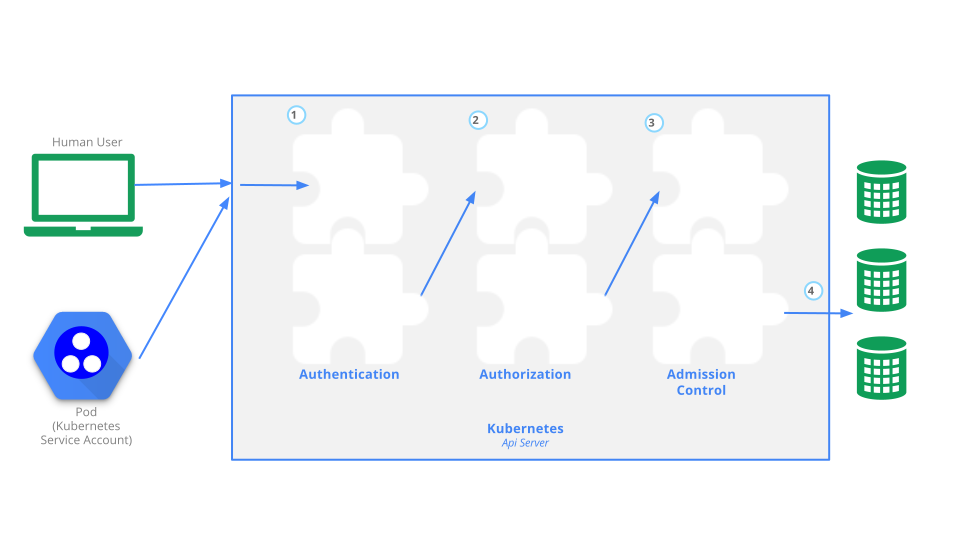

This page provides an overview of controlling access to the Kubernetes API.
Users access the Kubernetes API using
kubectl, client libraries, or by making REST requests. Both
human users and Kubernetes
service accounts can be authorized for API access. When a request
reaches the API, it goes through several stages, illustrated in the
following diagram:

Transport security
By default, the Kubernetes API server listens on port 6443 on the
first non-localhost network interface, protected by TLS. In a typical
production Kubernetes cluster, the API serves on port 443. The port can
be changed with the --secure-port, and the listening IP
address with the --bind-address flag.
The API server presents a certificate. This certificate may be signed
using a private certificate authority (CA), or based on a public key
infrastructure linked to a generally recognized CA. The certificate and
corresponding private key can be set by using the
--tls-cert-file and --tls-private-key-file
flags.
If your cluster uses a private certificate authority, you need a copy
of that CA certificate configured into your ~/.kube/config
on the client, so that you can trust the connection and be confident it
was not intercepted.
Your client can present a TLS client certificate at this stage.
Authentication
Once TLS is established, the HTTP request moves to the Authentication step. This is shown as step 1 in the diagram. The cluster creation script or cluster admin configures the API server to run one or more Authenticator modules. Authenticators are described in more detail in Authentication.
The input to the authentication step is the entire HTTP request; however, it typically examines the headers and/or client certificate.
Authentication modules include client certificates, password, and plain tokens, bootstrap tokens, and JSON Web Tokens (used for service accounts).
Multiple authentication modules can be specified, in which case each one is tried in sequence, until one of them succeeds.
If the request cannot be authenticated, it is rejected with HTTP
status code 401. Otherwise, the user is authenticated as a specific
username, and the user name is available to subsequent
steps to use in their decisions. Some authenticators also provide the
group memberships of the user, while other authenticators do not.
While Kubernetes uses usernames for access control decisions and in
request logging, it does not have a User object nor does it
store usernames or other information about users in its API.
Authorization
After the request is authenticated as coming from a specific user, the request must be authorized. This is shown as step 2 in the diagram.
A request must include the username of the requester, the requested action, and the object affected by the action. The request is authorized if an existing policy declares that the user has permissions to complete the requested action.
For example, if Bob has the policy below, then he can read pods only
in the namespace projectCaribou:
{
"apiVersion": "abac.authorization.kubernetes.io/v1beta1",
"kind": "Policy",
"spec": {
"user": "bob",
"namespace": "projectCaribou",
"resource": "pods",
"readonly": true
}
}If Bob makes the following request, the request is authorized because
he is allowed to read objects in the projectCaribou
namespace:
{
"apiVersion": "authorization.k8s.io/v1beta1",
"kind": "SubjectAccessReview",
"spec": {
"resourceAttributes": {
"namespace": "projectCaribou",
"verb": "get",
"group": "unicorn.example.org",
"resource": "pods"
}
}
}If Bob makes a request to write (create or
update) to the objects in the projectCaribou
namespace, his authorization is denied. If Bob makes a request to read
(get) objects in a different namespace such as
projectFish, then his authorization is denied.
Kubernetes authorization requires that you use common REST attributes to interact with existing organization-wide or cloud-provider-wide access control systems. It is important to use REST formatting because these control systems might interact with other APIs besides the Kubernetes API.
Kubernetes supports multiple authorization modules, such as ABAC mode, RBAC Mode, and Webhook mode. When an administrator creates a cluster, they configure the authorization modules that should be used in the API server. If more than one authorization modules are configured, Kubernetes checks each module, and if any module authorizes the request, then the request can proceed. If all of the modules deny the request, then the request is denied (HTTP status code 403).
To learn more about Kubernetes authorization, including details about creating policies using the supported authorization modules, see Authorization.
Admission control
Admission Control modules are software modules that can modify or reject requests. In addition to the attributes available to Authorization modules, Admission Control modules can access the contents of the object that is being created or modified.
Admission controllers act on requests that create, modify, delete, or connect to (proxy) an object. Admission controllers do not act on requests that merely read objects. When multiple admission controllers are configured, they are called in order.
This is shown as step 3 in the diagram.
Unlike Authentication and Authorization modules, if any admission controller module rejects, then the request is immediately rejected.
In addition to rejecting objects, admission controllers can also set complex defaults for fields.
The available Admission Control modules are described in Admission Controllers.
Once a request passes all admission controllers, it is validated using the validation routines for the corresponding API object, and then written to the object store (shown as step 4).
Auditing
Kubernetes auditing provides a security-relevant, chronological set of records documenting the sequence of actions in a cluster. The cluster audits the activities generated by users, by applications that use the Kubernetes API, and by the control plane itself.
For more information, see Auditing.
What's next
Read more documentation on authentication, authorization and API access control:
- Authenticating
- Admission Controllers
- Authorization
- Certificate
Signing Requests
- including CSR approval and certificate signing
- Service accounts
You can learn about:
- how Pods can use Secrets to obtain API credentials.